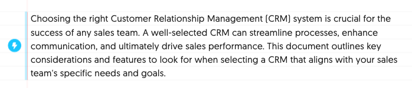
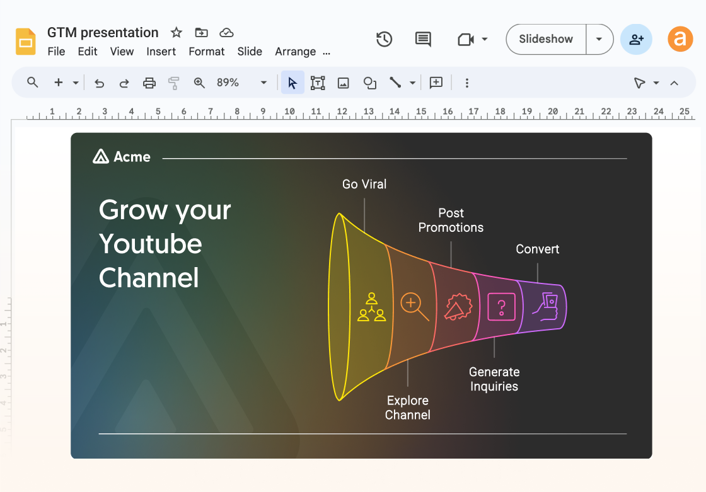
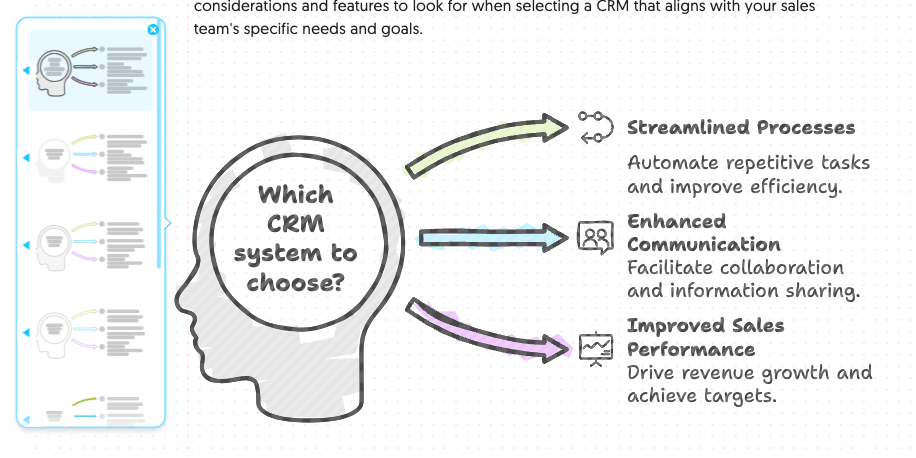

用 NapkinAI 半年才发现的 5 个隐藏功能——大多数人只用了它 30%
NapkinAI 不止是「选字→生成图」这么简单。credits 按词算、PPTX 导出全量可编辑、Slides 多版式候选……这些藏在深处的功能才是真正省时间的地方。
你以为 NapkinAI官网 上宣传的那种「一句话生成视觉图」就是它的全部？选中一段文字，点一下，AI 帮你画一张流程图或信息图——完事。我一开始也是这么用的，直到某周 credits 快见底的时候手贱翻了翻设置菜单，才发现这款工具真的被我用出了"屈才"感。
这半年摸下来，有几个功能藏得真深，官方教程里也没大张旗鼓地讲，但用对了能省你好几个小时的返工时间。

一、credits 消耗只算生成，生成之后随便改
新手最容易被坑的一条。我刚用的时候以为每次改个颜色、换个图标都要消耗 credits，结果小心翼翼地不敢动。后来去NapkinAI文档翻了一下才明白：
Napkin 的 credits 只消耗在"AI 帮你生成新东西"这一件事上。生成后怎么改都不限量。
具体来说，AutoSpark 整篇生成是按全文字数算的，大约每选中一个词消耗 1 个 credit。生成完之后，改颜色、换图标、调大小、加形状、切换样式——全都不消耗。甚至重新生成同一内容才算消耗，编辑已有视觉是无限量免费的。
这个设计逻辑藏在角落，但太反常识了。我见过不少同事生成完一张图就不敢再碰，怕把 credits 烧完，结果错过了最好的效果微调。
二、PPTX 导出不是死图，每个元素都能单独编辑
付费版（Plus 和 Pro）有个专属的 PPTX 导出功能——很多人看到"付费专属"四个字可能直接跳过了，但这个功能的价值远不止"能导出 PPTX"这么简单。
我之前用免费版导进 PowerPoint，是一张死图。图里的图标、文字框、连接线全焊在一起，想改个字只能在原工具里改完重新导。从NapkinAI下载升级付费版之后才发现，Napkin 的 PPTX 导出会把每个元素保留成 PowerPoint 里的独立对象：
- 点哪个图标都能单独替换或删除
- 文字框可以拖动调整位置
- 颜色、字体、大小随便改
- 甚至可以用 PowerPoint 自己的形状编辑功能做进一步调整

这意味着什么？意味着 Napkin 生成的视觉不是最终产物，而是一个"起点"。你完全可以先让 AI 帮你画好骨架，然后在 PowerPoint 里用你熟悉的工具做精修。AI 帮你省掉的是从零搭建结构的时间，而不是剥夺你最后的控制权。
三、Slides 每页给 3-5 个版式候选，别只盯着第一个
Napkin Slides 生成 PPT 的时候，默认给你的第一页版式不是唯一选择。大多数人看到生成结果直接就用了——我自己前三次也是这样，后来发现屏幕上其实展示了 3 到 5 个版式候选，只是被第一页的效果吸引住了，后面几个压根没留意。
这些版式的差异挺有意思的：有的是一页详细展开，有的是一页只放要点；有的用条形图，有的用表格，有的用信息图；配色方案也不一样——冷色调、暖色调、中性色都有。选完之后还能换，随时点版式选择器切到另一个。
举个例子，一页讲"市场规模和增长数据"，AI 可能同时给你条形图、表格、信息图三种版式。条形图视觉冲击力强，适合开场；表格数据精确，适合数据密集的汇报；信息图图文并茂，适合对外演示。让 AI 帮你铺好三条路，你自己选最当下场景的那条，比 AI 替你拍板要靠谱得多。
四、免费版 credits 是按周重置，不是按月
这个我也是无意中发现的。免费版给 500 credits，我一开始以为是一个月 500 个，结果第一周就烧了 300，慌了，心想接下来三周只能当乖孩子了。第二周一看——credits 满了？
对，免费版是每周重置 500 credits，不是按月。Plus 和 Pro 才是每月额度。这个差异在定价页面的角落小字里，不仔细看真容易忽略。
周度重置意味着什么？意味着如果你不是那种一口气生成十张图的重度用户，每周 500 个完全够。轻量使用的话——每周 1-2 张视觉——免费版根本用不完。我后来调整了使用节奏，每周挑个集中的时间用一次，平时只做编辑，现在已经免费版撑了三个月才考虑要不要升级。
五、Bold icons 和自定义品牌风格藏在样式选择器的最底部
Napkin 的样式选择器里，默认展示的是几种"风格预设"——扁平风、手绘风、简约风之类的。但往下拉到底，你会发现一个叫 Bold icons 的选项（粗线条图标），还有自定义品牌风格的入口。
Bold icons 这个选项挺好用的——普通图标是细线条，在深色背景或小尺寸下容易糊成一团。Bold icons 线条更粗，辨识度高，特别适合做演示文稿里的小图标。

自定义品牌风格是付费版（Plus 和 Pro）的功能。简单来说就是把你公司的品牌色、字体、图标风格存进去，之后每次生成自动套上。Plus 版可以存 3 个，Pro 版无限。对做企业汇报的人来说，这个功能能省掉每次生成后手动改颜色的麻烦。
一个要踩的坑：credits 消耗不看复杂度，只看字数
我之前以为写得越简略，消耗越少——实际是按选中的字数算的。300 个字就是约 300 credits，不管这 300 个字是"公司简介"还是"一句话总结"。内容复杂度会略有浮动，但核心公式就是"每词约 1 credit"。
所以反过来想：如果你只是想生成一张简单的流程图，别写大段文字，把描述压缩成关键词或短句，能省不少 credits。选中"产品流程 需求→设计→开发→上线"这 16 个字，消耗大约 16 credits，和你写一段 200 字的流程描述生成同一张图，效果差异不大，但 credits 差了十几倍。
把它用透才是真的省时间
NapkinAI 这类工具很容易陷入一种误区："AI 帮我做了"，然后就停在那里，不再往深了挖。但 credits 无限编辑、PPTX 全量可编辑、Slides 多版式候选——这些设计都在暗示一件事：AI 只是起点，真正的效率来自于你知道什么可以偷懒、什么必须精细。
我现在的使用习惯是：先让 AI 快速生成一个版本，然后花 5 分钟把所有版式翻一遍，选最合适的那个，再在 PowerPoint 里做最后的精修。credits 只花一次，后面全是免费的编辑，一个原本要半小时的视觉图，现在 10 分钟搞定。
顺手提一句，文中提到的这些功能细节我都从官方资料核实过，参考文档我也同步了副本——GitHub上能找到，Gitee和GitCode也各存了一份，国内访问不方便的时候可以换着来。